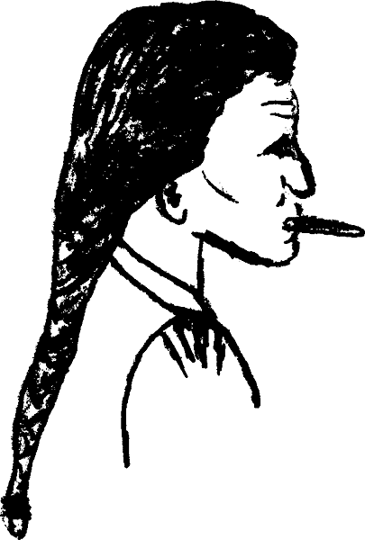
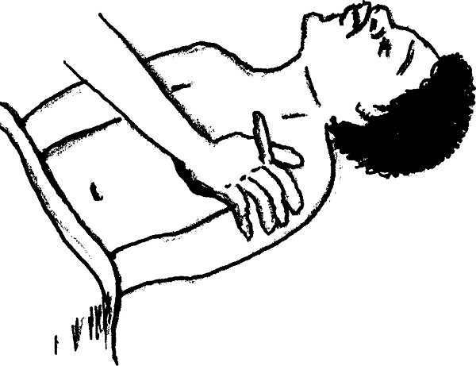

{% set pagetitle = "How to take a temperature using a thermometer" %}
{% set seq_length = 3 %}
{% set seq_position = 2 %}
{% set seq_llink = "How_to_take_temperature1.html" %} ## set rlink equal to next page href
{% set seq_rlink = "How_to_take_temperature3.html" %} ## set llink equal to previous page href
{% extends "templates.jinja/base.page-with-sequence.html" %}
{% block title %} Hesperian - Pregnancy & Birth{% endblock %}
{% block id %}How_to_take_temperature2{% endblock %}
{% block content %}

Put the thermometer:
under the tongue (keep the mouth closed around it)
OR in the armpit if there is danger that the person might bite the thermometer.